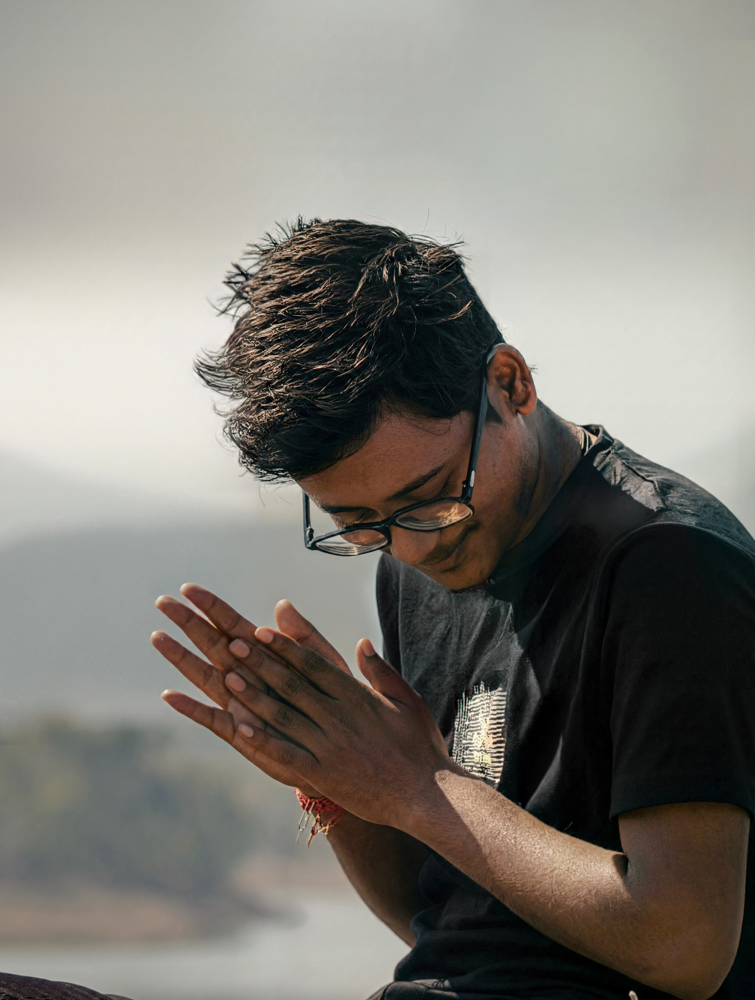

Chemistry Graduate. Visual Storyteller.
A dedicated B.Sc. Chemistry graduate (8.0 CGPA) bridging the gap between analytical science and digital storytelling.
Core competencies in Electrochemistry and Calculus.
Cinematic color science & precision photography.
Mastering flow, timing, and VFX composition.
Understanding the hardware that powers digital art, from component optimization to system stability.